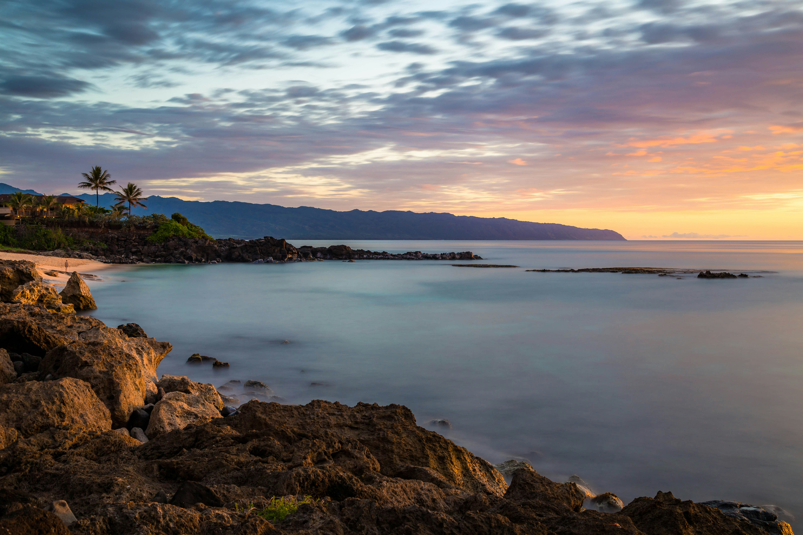

| img | inf | other | |
Bondi Beach, Australia |
Boulders Beach, South Africa |
||
|
 sahelSeychelles is a nation of more than 100 islands with no shortage of outstanding beaches. There's the sweep of Beau Vallon Beach, on the main island of Mahé, or the stunning Anse Lazio on Praslin Island, where the sand and sea are like a mirage come to life. But none of them quite tops the high drama of Anse Source d'Argent on the small isle of La Digue, a sleepy refuge where bicycles are the preferred method of transportation. Located within L'Union Estate Park, an old plantation that now offers a window into the island's colonial past, Anse Source d'Argent will be recognizable to anyone who has leafed through photos of tropical beach destinations. Anse Source d'Argent is not large, consisting of a few small coves of soft sand that yield to impossibly clear turquoise water, but what sets it apart is the giant granite boulders that look like they've been there for millennia. Some are small enough to clamber over, others are like silent elephants staring at the sublime seas, and the scene is like a tourism brochure come to life. To enjoy the beach in its full glory, arrive first thing in the morning, as soon as L'Union Estate Park opens, before the hordes and kayakers descend. La Digue is tiny and a comfortable place to stay; also, on a gorgeous beach is the hotelLe Relax Beach House. |
|||
| information | video | about | image |